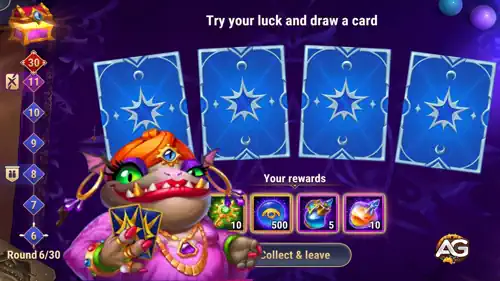
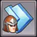
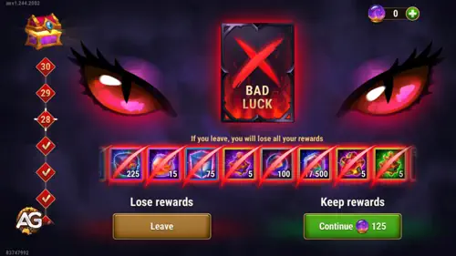

Seer's Game Event Guide – Tips & Strategies in Hero Wars Alliance
- By: Alexandre Domingos. .
Get ready for a game of fate, fortune, and fiery decisions! Are you feeling lucky? Then prepare yourself for one of the most thrilling limited-time events in Hero Wars Alliance: the Seer's Game.
This exciting mini-game tests not just your luck, but your nerve and it offers valuable rewards to the bold. Whether you're a beginner or a seasoned warrior, this guide will walk you through everything you need to know about the Seer's Game, and how to make the most of it while it lasts.

🔮 What is the Seer’s Game?
The Seer’s Game is a time-limited event that becomes available once your team reaches level 15. It typically runs for 3 days and appears on your main screen during that period. Once it's live, you’ll enter a mysterious card-drawing mini-game that feels like a mix of strategy and luck and with over 30 levels of escalating risk and reward, the excitement never stops!
🎮 How the Mini-Game Works
To enter a round of the Seer’s Game, you need to spend 25 Seer's Orbs. There’s no limit to how many times you can play as long as you have Orbs to spend.
Each round presents you with up to four face-down cards. Most cards offer a reward, but one unlucky card could end your run immediately. It’s a classic gamble push forward for greater rewards, or retreat with what you’ve earned so far?
🟢 Safe Rounds and Cursed Cards
The first few rounds (typically rounds 1 to 4) are “safe rounds,” meaning none of the cards will end your game. After that, beginning from round 5, the cursed card is introduced, making each choice more suspenseful than the last.
If you draw the cursed card, the mini-game ends instantly and you lose all the rewards you’ve accumulated during that run. But there's a twist you can spend more Seer's Orbs to retry and continue from the same round.
⚠️ Caution: Retry Costs
The retry system is helpful, but it comes at an increasing cost. Each retry uses more Orbs than the previous one, and the retry price only resets once you start a new Seer’s Game attempt. If you run out of Orbs after drawing a cursed card, you’ll have no choice but to forfeit everything. So always manage your resources wisely!
🎁 Seer’s Game Rewards
Every time you select a lucky card and advance, you receive a random prize. As you progress through rounds, the rewards become increasingly valuable, and the card colors change to reflect their rarity green, blue, purple, orange, and eventually red.
Complete all 30 rounds, and you’ll walk away with a grand prize. The catch? You have to make it to the end without drawing the cursed card (or have enough Orbs to buy your way past it).
You can view potential rewards by clicking the “i” icon in the mini-game interface. As you collect rewards, they’re displayed at the bottom of the screen and added to your inventory only once the run ends either by reaching the final round or exiting voluntarily.
💌 Bonus: Guild Milestone Rewards
Teamwork pays off! When you reach specific rounds 8, 13, and 18 all your guildmates receive a bonus reward via in-game mail. So even if you’re the one playing, your entire guild celebrates your success. This feature encourages players to support each other and adds a sense of shared adventure to the event.
🔧 How to Get Seer’s Orbs
Seer's Orbs are the key to playing the event, and you can acquire them through several methods:
- Event Quests: Complete daily and mission-based objectives to earn Orbs.
- Purchasing Offers: Special bundles may be available in the in-game shop.
- Mini-Game Rewards: Sometimes the lucky cards contain Orbs as a reward.
📋 Seer's Game Event Quests Overview
During the Seer’s Game event, you can complete several chains of quests to earn valuable rewards such as Seer’s Orbs, Season Points, and Artifact resources. Here’s a breakdown of each quest line and their corresponding tasks and prizes:
1. 🗓️ Day After Day (Login Rewards)
Log in daily during the event to collect free Seer’s Orbs.
| Task | Reward |
|---|---|
| Log in 1 time | 50 |
| Log in 2 times | 50 |
| Log in 3 times | 50 |
| Total: 150 |
|
2. 🎲 Test of Luck (Rounds Played)
Play rounds in the Seer’s Game to earn Artifact resources and Skin Stones.
| Task | Reward |
|---|---|
| Play 10 rounds | 5 |
| Play 20 rounds | 10 |
| Play 30 rounds | 20 |
| Play 40 rounds | 20 |
| Play 50 rounds | 5 |
3. 🍀 Lucky Streak (Wins in a Row)
Earn bonus Orbs for winning consecutive rounds without drawing a cursed card.
| Task | Reward |
|---|---|
| Win 3 rounds in a row | 5 |
| Win 5 rounds in a row | 5 |
| Win 7 rounds in a row | 10 |
| Win 9 rounds in a row | 10 |
| Win 11 rounds in a row | 15 |
| Total: 45 |
|
4. 💎 Value Exchange (Emerald Spending)
Spend emeralds during the event to earn Seer’s Orbs and Season Points.
| Emeralds Spent | Reward |
|---|---|
| 400 | 50 |
| 1,200 | 5 |
| 2,000 | 50 |
| 3,200 | 5 |
| 4,400 | 50 |
| 6,000 | 5 |
| 8,000 | 75 |
| 10,000 | 10 |
| 14,000 | 75 |
| 19,000 | 10 |
| 26,000 | 100 |
| 35,000 | 10 |
| 46,000 | 100 |
| 60,000 | 10 |
| 80,000 | 100 |
| 100,000 | 25 |
| Total: 70 |
|
5. 🏰 The Way Up (Tower Chests)
Open chests in the Tower to earn both Seer’s Orbs and Season Points.
| Task | Reward |
|---|---|
| Open 3 chests in the Tower | 5 |
| Open 5 chests in the Tower | 5 |
| Open 7 chests in the Tower | 5 |
| Open 20 chests in the Tower | 10 |
| Total: 25 |
|
💰 Low Cost Strategy — Push for 20 Chests
| Treasure Floor | Floor | Free Chests | Chests w/ Emeralds | Box Value (em.) | Total Value x2 | Chests Opened | Emerald Cost |
|---|---|---|---|---|---|---|---|
| 2 | 1 | 1 | 2 | 70 | 140 | 2 | 70 |
| 4 | 2 | 1 | 2 | 70 | 140 | 3 | 140 |
| 6 | 3 | 1 | 2 | 70 | 140 | 3 | 140 |
| 8 | 4 | 1 | 2 | 70 | 140 | 3 | 140 |
| 10 | 5 | 1 | 2 | 70 | 140 | 3 | 140 |
| 12 | 6 | 1 | 2 | 135 | 270 | 1 | 0 |
| 14 | 7 | 1 | 2 | 135 | 270 | 1 | 0 |
| 16 | 8 | 1 | 2 | 135 | 270 | 1 | 0 |
| 18 | 9 | 1 | 2 | 135 | 270 | 1 | 0 |
| 20 | 10 | 1 | 2 | 135 | 270 | 1 | 0 |
| 22 | 11 | 1 | 2 | 135 | 270 | 1 | 0 |
| Total | — | 11 | 22 | — | 2320 | 20 | 630 emeralds. |
Alexandre's Tip: If you’re looking to maximize your rewards while minimizing your emerald spend, a smart strategy is to aim for opening 20 chests per cycle during the Seer's Game Event. This allows you to earn extra Seers Orbs and Season Points without breaking the bank. By following this strategy, you can steadily progress through the event and make the most of your resources.
Result: Low Cost Open 20 chests per cycle, spending 630 Emeralds. This completes missions up to 20 chests — gaining +10 extra Seers Orbs per day, and +35 Season Points per days. Total emerald spend over 3 days: 1890 Emeralds.
6. 🎁 Grand Prize (Complete the Seer's Game)
Earn exclusive rewards each time you successfully complete all 30 rounds of the Seer's Game.
| Task | Reward |
|---|---|
| Complete the Seer's Game 1 time | 25 |
| Complete the Seer's Game 2 times | 20 |
| Complete the Seer's Game 3 times | 15,000 |
| Complete the Seer's Game 4 times | 125 |
| Complete the Seer's Game 5 times | 1x |
| Complete the Seer's Game 6 times | 2,000 |
7. 🛡️ Keeper of the Borders
Complete the following monster-hunting tasks to earn valuable resources and speedups.
| Task | Reward |
|---|---|
| Defeat 6 Lv. 1 or above Monsters | 1  Training Speedup |
| Defeat 12 Lv. 1 or above Monsters | Stone (10K) x45 |
| Defeat 20 Lv. 1 or above Monsters | Iron (10K) x7 |
| Defeat 30 Lv. 1 or above Monsters | Food (100K) x5 |
| Defeat 40 Lv. 1 or above Monsters | Stone (10K) x7 |
| Defeat 45 Lv. 1 or above Monsters | Infantry Manual x1 |
| Defeat 50 Lv. 1 or above Monsters | Food (100K) x5 |
| Defeat 53 Lv. 1 or above Monsters | Iron (100K) x11 |
| Defeat 55 Lv. 1 or above Monsters | Iron (100K) x2 |
💡 Pro Tip: How to Avoid Losing Your Progress When You Hit a Bad Luck Card
One of the most frustrating moments in the Seer’s Game is drawing the cursed card especially when you’re close to the final rounds and don’t have enough Seer’s Orbs left to continue. If you’re out of Orbs, you usually see two buttons: “Continue” (if you have Orbs) or “Leave”. Clicking “Leave” ends your run and erases all your gathered rewards even if you were just one round away from the grand prize skin!
But here’s a secret trick that experienced players are using to turn the odds in their favor. Instead of pressing “Leave,” you can safely exit the game without confirming your decision and return later. Here’s how:

📱 Step-by-Step: Using the Game’s Home Button to Pause Bad Luck
- When the cursed card appears and you don’t have enough Orbs to continue, do not click “Leave.”
- Instead, tap the “Home” icon in the top-right corner of the screen. This will exit you from the Seer’s Game back to the main menu.
- If you’re playing on mobile or using the web, you can also close the app or browser window entirely just make sure not to press “Leave.”
- When you log back into Hero Wars later, the game will take you to the start screen as usual.
- Now you’re free to complete more event quests and earn additional Seer’s Orbs.
- Once you have enough Orbs again, tap the Seer’s Game event and you’ll return exactly to the round where the cursed card appeared giving you a second chance!
This trick works because the game only finalizes your rewards when you click "Leave." By exiting using the game’s interface or force-closing the app, your current game session is preserved in memory, allowing you to pick up right where you left off.
🚫 What Happens If You Click “Leave”
If you do click “Leave,” the game ends your current run, all your progress is lost, and you’ll have to start again from round 1. This not only costs you time and resources but might also make it impossible to reach the grand prize especially if the prize is a limited-edition skin.
🎯 Why This Strategy Matters
Using this method lets you pause your game and return later with enough Orbs to continue chasing that final reward. It’s especially useful during the last day of the event when you’re out of Orbs but still have quests left to complete.
In short: Don’t panic when the cursed card shows up just pause, gather more resources, and come back stronger!
🎯 Strategy Tips for Winning
- Know when to walk away: Don’t get greedy. If you’re deep in a run and feeling nervous, it might be smart to collect your rewards early instead of risking it all.
- Save your Orbs: Hoard Seer’s Orbs ahead of the event or plan purchases wisely. Running out mid-run can be devastating if a cursed card appears.
- Prioritize quests that give Orbs: Complete the daily login and early event quests as soon as possible to build a healthy stockpile of Seer’s Orbs.
✨ Why the Seer's Game is So Engaging
There’s something magical about mixing strategy with a little bit of luck. Each card draw feels like a mini-heartbeat will you get that epic artifact chest, or will the cursed card send your dreams crashing? It’s this suspense that makes the event so addicting.
On top of that, the event feels rewarding even if you don’t reach the end. The quests, guild rewards, and mini-wins along the way make it enjoyable for players of all levels. Whether you're going for the grand prize or just trying your luck for fun, there’s always something to gain.
🧠 Final Thoughts
The Seer’s Game isn’t just about chance it’s about managing risk, optimizing opportunities, and knowing when to push forward or walk away. Whether you aim to reach round 30 or play a few safe games for resources, the event provides a refreshing change of pace and a rush of excitement in Hero Wars Alliance.
Have fun, trust your instincts, and may the lucky cards be ever in your favor!
Explore new skills with our featured heroes!


Leave Your Opinion!
Did you like our Seer's Game Tips for Hero Wars Mobile? Is there something you didn't understand or would like to suggest changes to? We invite you to join our comment section on the Alexandre Games Blog page. Feel free to express your opinion, clarify your doubts, and share your suggestions.
Click the button below to get started: